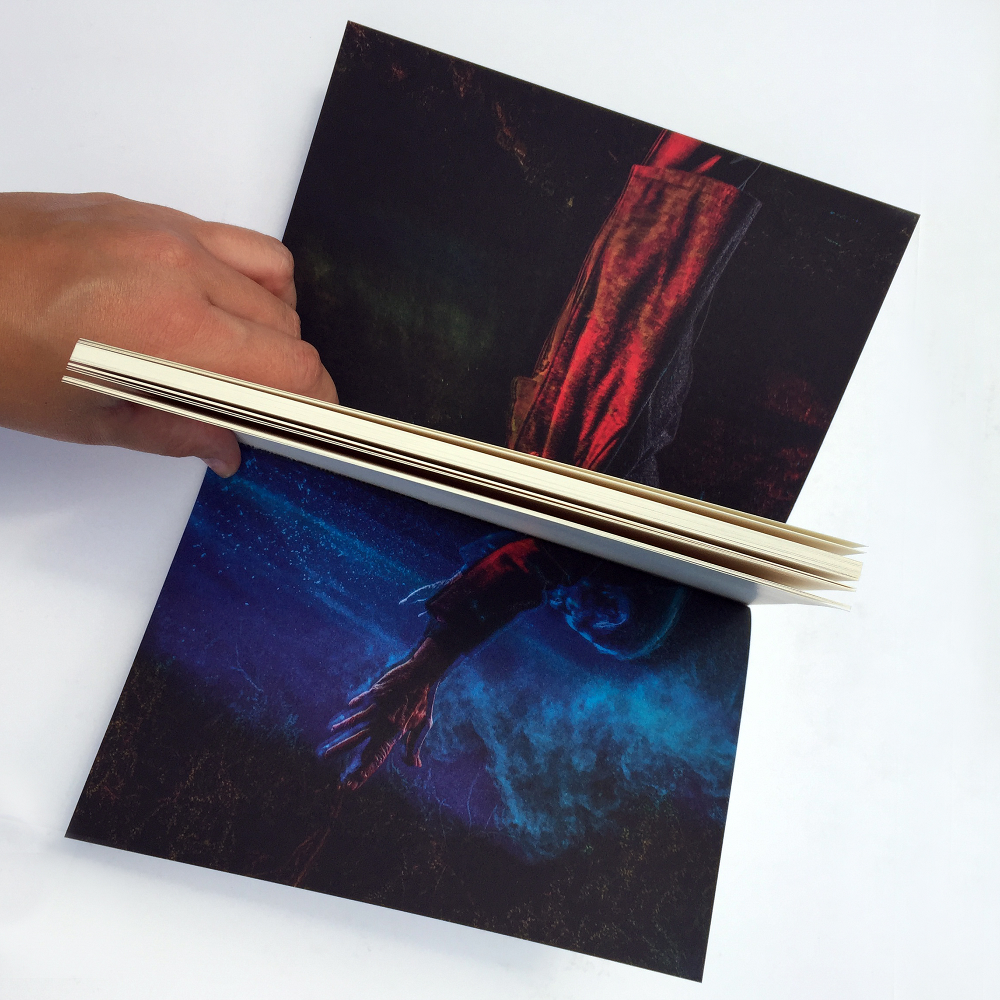
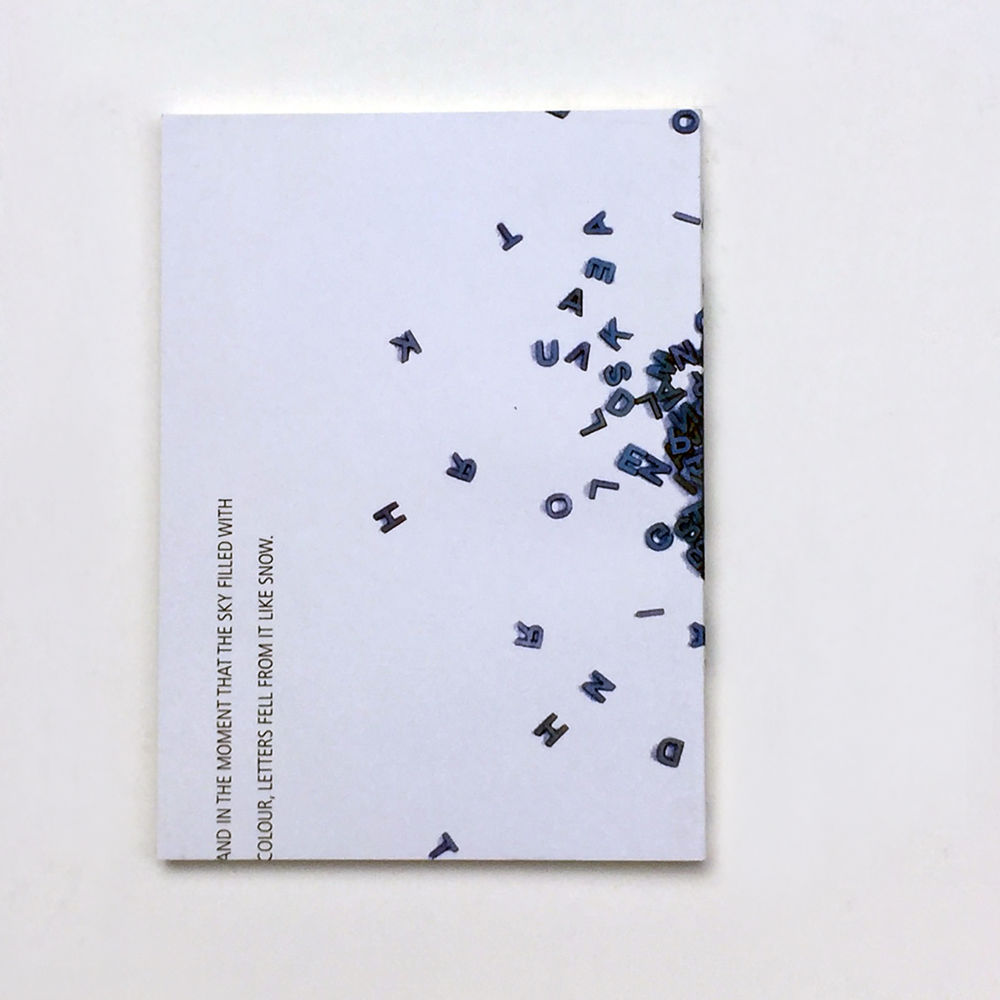
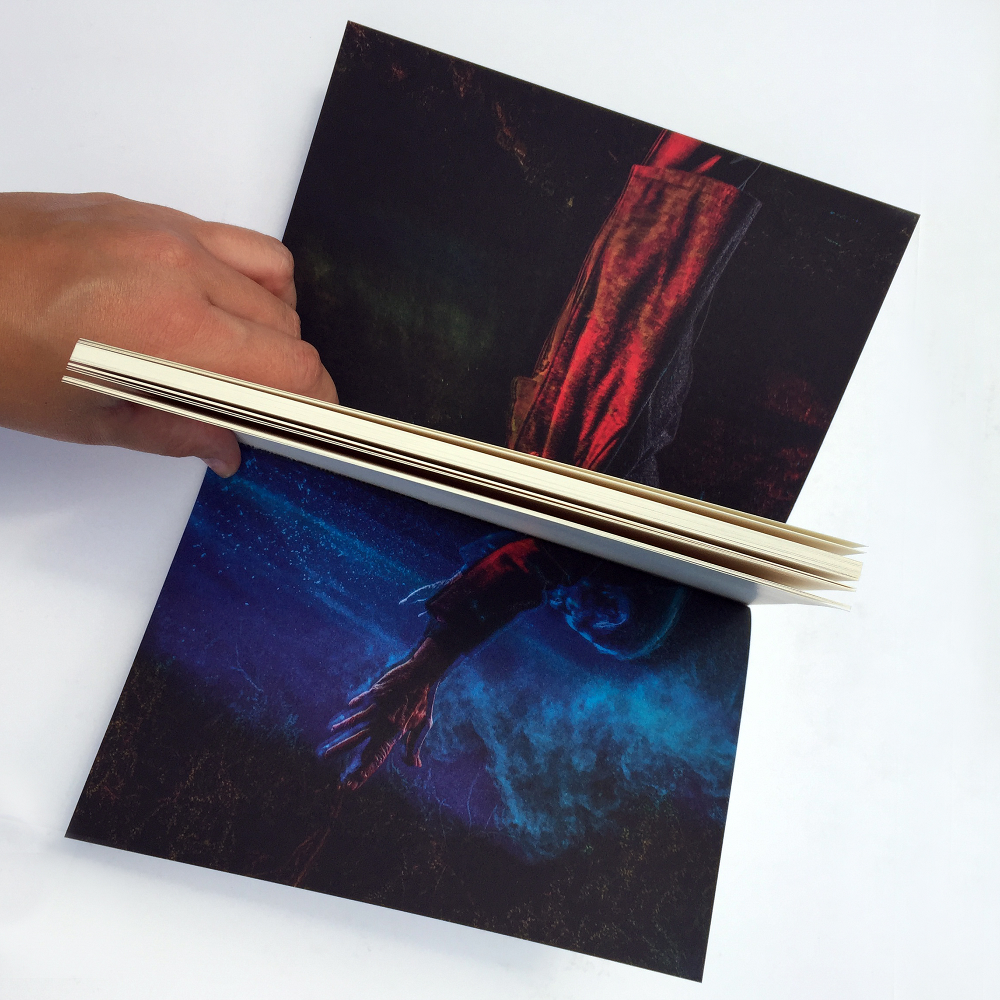
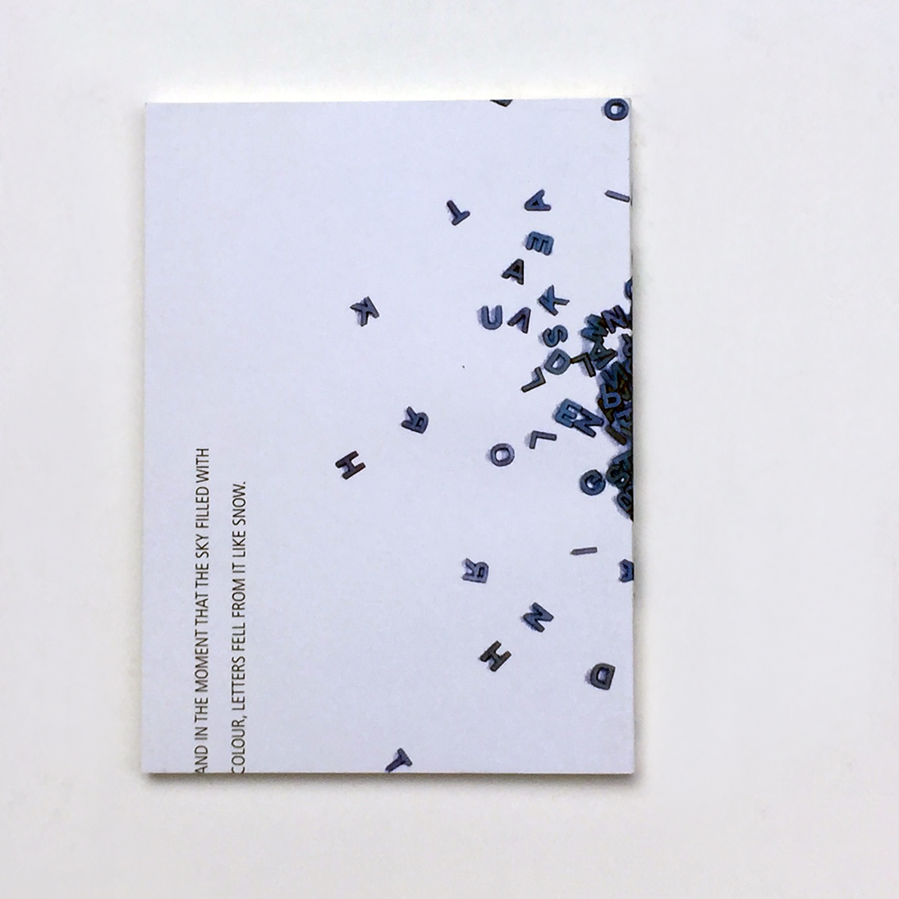
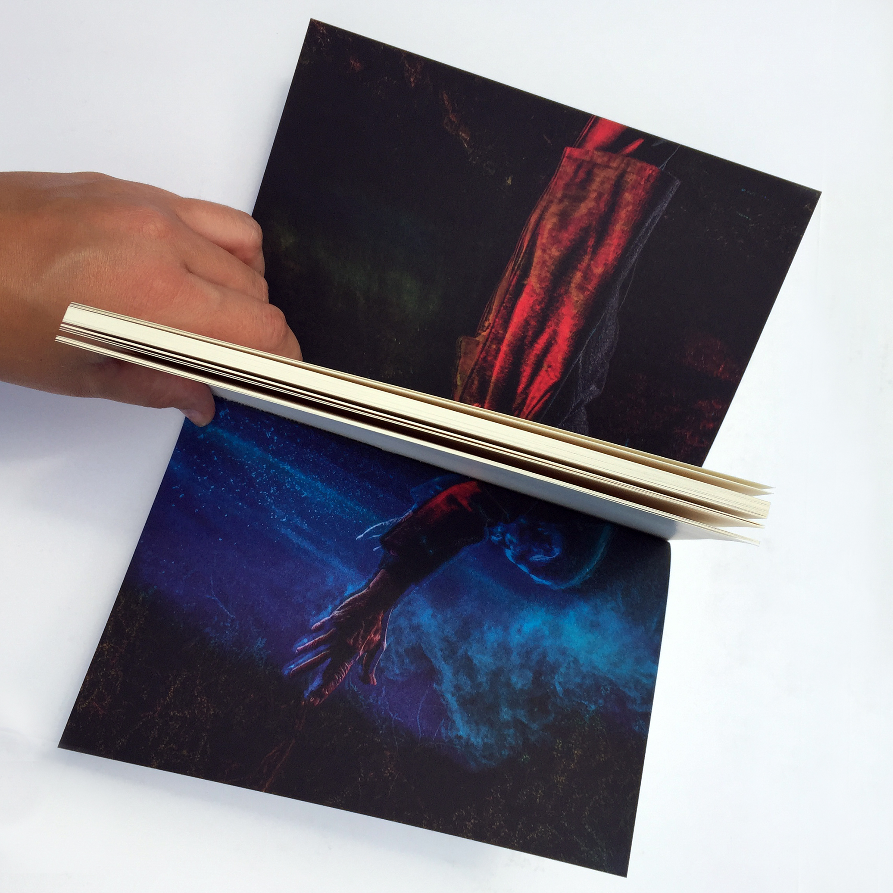
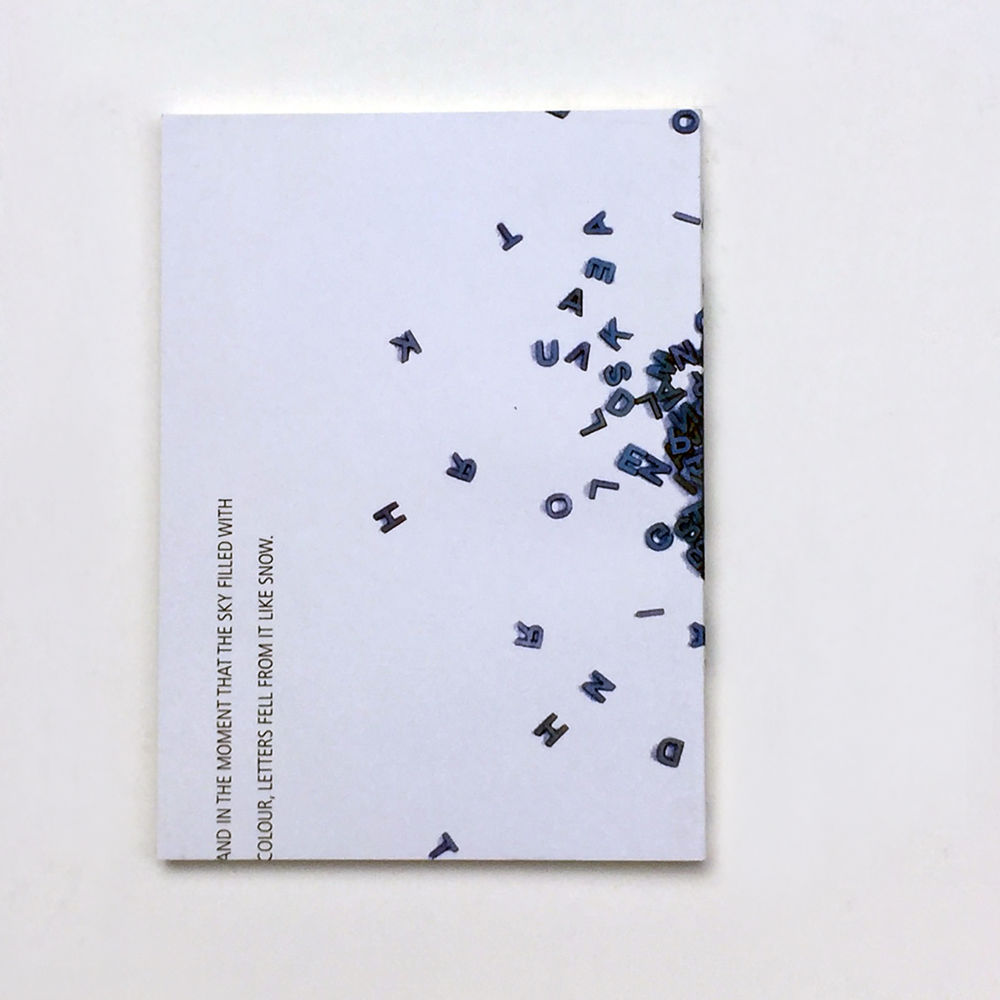

THERE IS NO SUCH THING AS "AWAY".
WHEN WE THROW ANYTHING AWAY IT MUST GO SOMEWHERE.
--- Annie Leonard ---
During the work on projects, in the print facilities of my former Uni, I always felt bad about the waste of materials. Especially the amount of paper waste you get, when setting up a job on industrial printing machines.
I believe that, even though the quality of the prints is not good enough for the assigned job - it is still to good to throw it away. Therefore I started to collect misprinted papers, which were declared as paper waste and reused them as cover material.
The result were unique, little notebooks containing of different, leftover papers.
Perfect for little gifts!


FORMAT
mostly in DIN A5
PRINTING METHODS
Offset Printing
PAPER
varying from 150 - 300 g/m²
BINDING
Perfect Binding